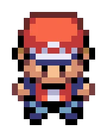
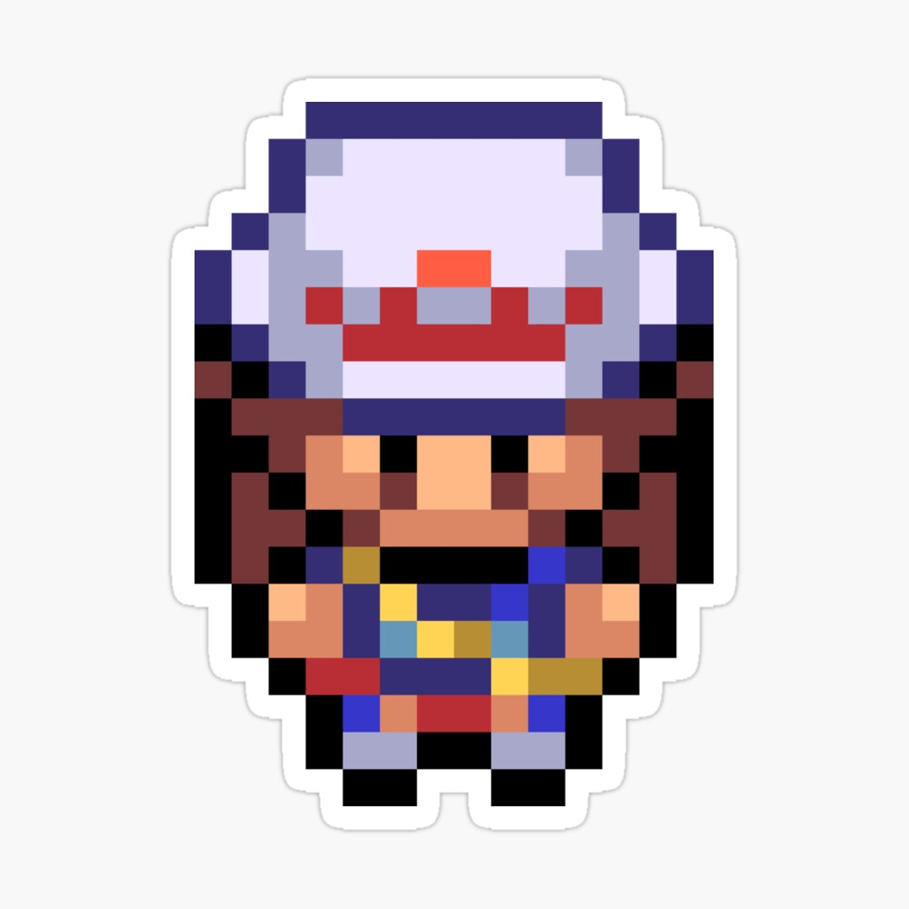
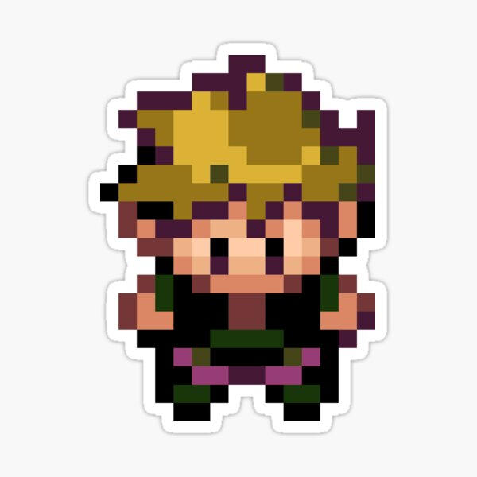
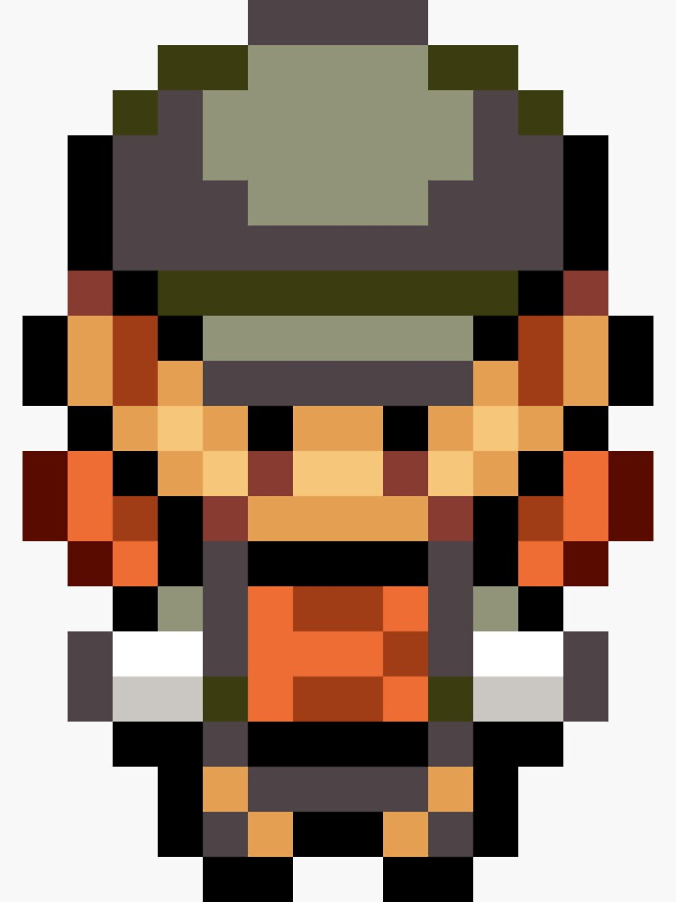

Personagens Principais de Kanto
Conheça os rostos que você encontrará em sua jornada por Kanto!

Red (Protagonista)
O jovem treinador que embarca em uma jornada para se tornar o Campeão Pokémon de Kanto.

Leaf (Protagonista)
Seu ambicioso rival e neto do Professor Carvalho, sempre um passo à frente... ou tentando estar.

Blue (Rival)
Seu ambicioso rival e neto do Professor Carvalho, sempre um passo à frente... ou tentando estar.
Professor Carvalho
O renomado pesquisador Pokémon que dá a você seu primeiro Pokémon e a Pokédex.

Equipe Rocket
Uma organização criminosa que busca usar Pokémon para seus próprios fins nefastos.